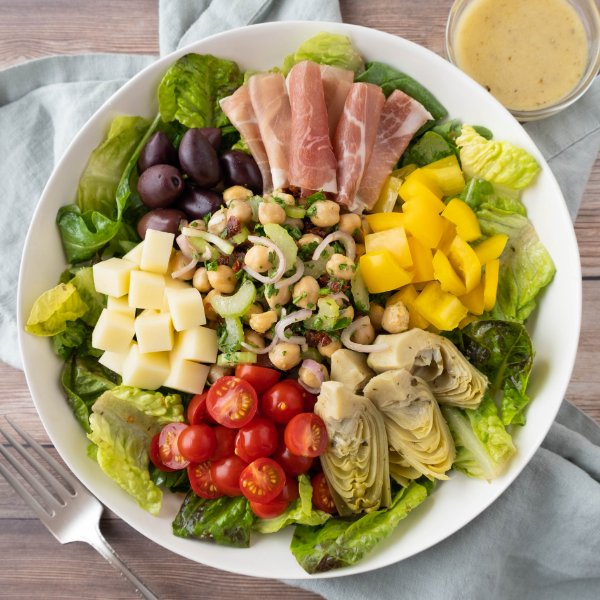

"Antipasti" Salad with Prosciutto, Marinated Chickpeas & Mozzarella

Total Time
35 min
Nutrition (per serving)
699.5 kcalCalories
29.2 gProtein
52.8 gCarbs
43.9 gFat
Full nutrition table
| Calories | 699.5 kcal |
| Total fat | 43.9 g |
| Saturated fat | 9.8 g |
| Trans fat | 0.2 g |
| Cholesterol | 49.8 mg |
| Sodium | 1629.6 mg |
| Carbohydrates | 52.8 g |
| Fiber | 15 g |
| Sugars | 11 g |
| Protein | 29.2 g |
| Potassium | 942.4 mg |
| Calcium | 346.4 mg |
| Iron | 4.8 mg |
| Vitamin A | 1116.7 IU |
| Vitamin C | 100.7 mg |
| Vitamin D | 6.1 IU |
Cookware
Ingredients
- 2 (6 oz) jarsartichoke hearts, marinated
- 2 stickscelery
- 2 (15 oz) cansgarbanzo beans (chickpeas)
- 2 clovesgarlic
- 1 pintgrape tomatoes
- 1 small bunchItalian (flat-leaf) parsley
- ⅔ cupKalamata olives, pitted
- ⅔ (8 oz) blockmozzarella cheese
- 8 slicesprosciutto
- 1shallot
- 2 (5 oz) pkgsspring mix (mixed greens)
- 4sun-dried tomatoes, oil-packed
- 1yellow bell pepper
- black pepper
- crushed red pepper
- Dijon mustard
- extra virgin olive oil
- honey
- onion powder
- oregano, dried
- salt
- white wine vinegar
Steps
- Wash and dry the fresh produce. (Skip the mixed greens if they came pre-washed.)2 sticks celery
1 small bunch Italian (flat-leaf) parsley
1 pint grape tomatoes
1 yellow bell pepper
2 (5 oz) pkgs spring mix (mixed greens) - Drain and rinse chickpeas; set aside to drain further.2 (15 oz) cans garbanzo beans (chickpeas)
- Peel and mince garlic; place in a small bowl along with oil, vinegar, Dijon, honey, and spices. Whisk to combine the dressing and set aside.2 cloves garlic
⅓ cup extra virgin olive oil
¼ cup white wine vinegar
4 tsp Dijon mustard
2 tsp honey
1 tsp salt
½ tsp black pepper
½ tsp oregano, dried
½ tsp onion powder - Peel, halve, and slice shallot into thin half-moons; place in a medium bowl.1 shallot
- Trim celery and cut crosswise into thin pieces; add to the bowl with the shallot.
- Shave parsley leaves off the stems; discard stems and mince the leaves. Add to the bowl.
- Mince sun-dried tomatoes; add to the bowl along with the chickpeas, half the dressing (reserving the rest for serving), salt, and crushed red pepper. Stir to combine and set aside to marinate.4 sun-dried tomatoes, oil-packed
¼ tsp salt
⅛ tsp crushed red pepper - Meanwhile, halve tomatoes and place on a large plate.
- Trim, seed, and small dice bell pepper; add to the plate with the tomatoes, keeping them separate.
- Medium dice mozzarella and add to the plate.⅔ (8 oz) block mozzarella cheese
- Cut or tear each slice of prosciutto into 3 pieces; roll each piece and add to the plate.8 slices prosciutto
- Add artichokes and olives to the plate.2 (6 oz) jars artichoke hearts, marinated
⅔ cup Kalamata olives, pitted - To serve, divide mixed greens between plates or bowls. Place a scoop of marinated chickpeas in the center of the greens, then surround with tomatoes, bell pepper, mozzarella, prosciutto, artichokes, and olives. Drizzle with reserved dressing and enjoy!